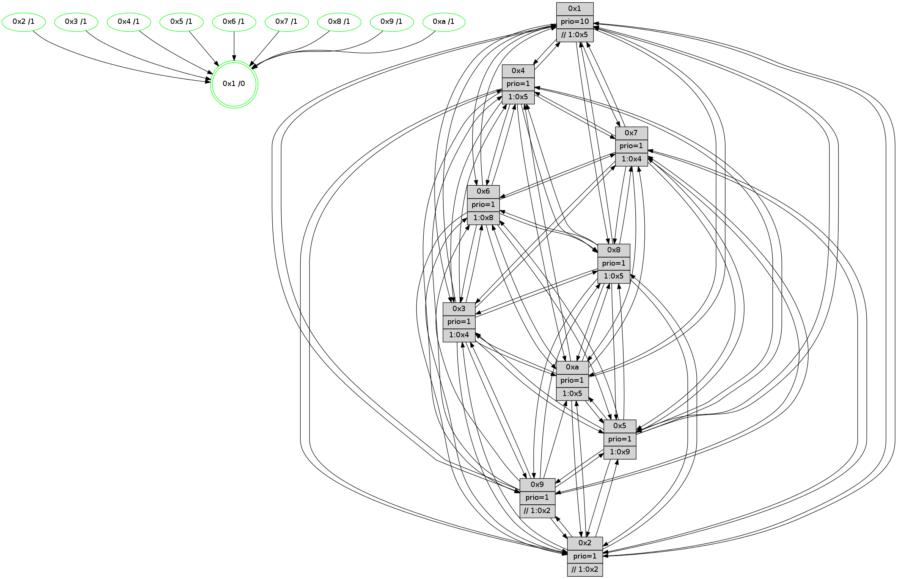

>> << IDX [start] -100 -25 -5 +0 +5 +25 +100 [780.002496958]
 Previous packets
----------------------------------------------------------------------
775.161357 beacon01(faad) #0 coord=01,02,03,04,05,06,07,0a,09,08 cycle=688.0ms assoc
-- color-indic=1 64 d6 22
775.171340 beacon02(faad) #0 coord=01,02,03,04,05,06,07,0a,09,08 cycle=688.0ms assoc 64 45 13
775.181339 beacon03(faad) #0 coord=01,02,03,04,05,06,07,0a,09,08 cycle=688.0ms assoc 64 3f 5e
775.191340 beacon04(faad) #0 coord=01,02,03,04,05,06,07,0a,09,08 cycle=688.0ms assoc 64 48 b4
775.201340 beacon05(faad) #0 coord=01,02,03,04,05,06,07,0a,09,08 cycle=688.0ms assoc 64 32 f9
775.211341 beacon06(faad) #0 coord=01,02,03,04,05,06,07,0a,09,08 cycle=688.0ms assoc 64 bc 2e
775.221341 beacon07(faad) #0 coord=01,02,03,04,05,06,07,0a,09,08 cycle=688.0ms assoc 64 c6 63
775.231344 beacon0a(faad) #0 coord=01,02,03,04,05,06,07,0a,09,08 cycle=688.0ms assoc 64 b7 68
775.241346 beacon09(faad) #0 coord=01,02,03,04,05,06,07,0a,09,08 cycle=688.0ms assoc 64 39 bf
775.251346 beacon08(faad) #0 coord=01,02,03,04,05,06,07,0a,09,08 cycle=688.0ms assoc 64 43 f2
775.263856 [Hello(4): seq=496 sym=5,7,6,2,3,9,8,10,1 sysInfo= stat=5:0,10,10,8/7:13,1,13,3/6:12,0,12,8/2:0,11,7,8/3:14,5,5,5/9:14,3,10,3/8:2,7,11,8/10:8,5,14,7/1:2,9,5,1]
775.266616 [Hello(9): seq=440 sym=2,5,3,4,7,6,8,10,1 asym= sysInfo=hasWarning stat=2:15,7,4,0/5:15,3,6,1/3:0,4,6,9/4:0,15,9,5/7:3,0,0,6/6:4,9,10,6/8:12,1,2,0/10:4,11,2,0/1:1,7,4,1]
775.269903 [Hello(8): seq=440 sym=5,2,3,4,7,6,9,1 sysInfo=hasWarning stat=5:5,4,15,9/2:15,13,5,2/3:3,13,11,9/4:3,0,13,6/7:2,11,14,8/6:5,2,9,8/9:6,1,12,6/1:10,10,1,0]
775.272596 [Color(8) seq=163 @0:0 prio=1 >10.@1,1.@2,1.@3,1.@5]
775.274834 [Color(9) seq=145 @0:0 prio=1 >>1.@2,1.@3,1.@5]
775.276398 [Color(3) seq=137 @0:0 prio=1 >1.@4,1.@5,1.@6,1.@7]
775.279007 [Hello(7): seq=496 sym=2,3,5,6,8,9,10,1 sysInfo=hasWarning stat=2:6,8,2,10/3:4,14,0,9/5:4,8,1,13/6:14,8,15,3/8:13,3,0,5/9:11,0,14,9/10:2,0,0,8/1:13,7,4,0]
775.281703 [Color(1) seq=177 @0:0 prio=10 >>1.@2,1.@3,1.@5]
775.285105 [Hello(10): seq=429 sym=6,2,3,8,9,5,7,4,1 sysInfo=hasWarning stat=6:14,3,13,3/2:7,15,5,2/3:13,13,4,6/8:6,7,9,7/9:0,4,5,5/5:9,2,11,10/7:8,15,12,4/4:12,3,5,6/1:6,14,4,1]
775.288584 [Color(10) seq=128 @0:0 prio=1 >1.@5,1.@8,1.@9]
775.290535 [Color(6) seq=150 @0:0 prio=1 >10.@1,1.@8,1.@9,1.@a]
----------------------------------------------------------------------
775.949488 beacon01(faad) #0 coord=01,02,03,04,05,06,07,0a,09,08 cycle=688.0ms assoc
-- color-indic=1 64 12 2c
775.959471 beacon02(faad) #0 coord=01,02,03,04,05,06,07,0a,09,08 cycle=688.0ms assoc 64 81 1d
775.969471 beacon03(faad) #0 coord=01,02,03,04,05,06,07,0a,09,08 cycle=688.0ms assoc 64 fb 50
775.979469 beacon04(faad) #0 coord=01,02,03,04,05,06,07,0a,09,08 cycle=688.0ms assoc 64 8c ba
775.989470 beacon05(faad) #0 coord=01,02,03,04,05,06,07,0a,09,08 cycle=688.0ms assoc 64 f6 f7
775.999471 beacon06(faad) #0 coord=01,02,03,04,05,06,07,0a,09,08 cycle=688.0ms assoc 64 78 20
776.009473 beacon07(faad) #0 coord=01,02,03,04,05,06,07,0a,09,08 cycle=688.0ms assoc 64 02 6d
776.019476 beacon0a(faad) #0 coord=01,02,03,04,05,06,07,0a,09,08 cycle=688.0ms assoc 64 73 66
776.029476 beacon09(faad) #0 coord=01,02,03,04,05,06,07,0a,09,08 cycle=688.0ms assoc 64 fd b1
776.039476 beacon08(faad) #0 coord=01,02,03,04,05,06,07,0a,09,08 cycle=688.0ms assoc 64 87 fc
776.050734 [Hello(1): seq=406 sym=4,2,9,5,10,3,8,6,7 sysInfo=coloring-mode-on,ColoringModeRequestCalled stat=4:8,1,15,0/2:5,8,5,9/9:9,1,11,1/5:5,5,14,2/10:2,11,2,8/3:4,0,2,0/8:13,11,6,7/6:7,7,4,7/7:10,13,10,10]
776.054809 [Hello(2): seq=493 sym=4,5,7,6,3,9,8,10,1 sysInfo=hasWarning stat=4:8,1,9,4/5:12,5,6,2/7:2,7,1,6/6:14,9,13,6/3:14,7,6,4/9:0,5,6,0/8:15,0,6,5/10:7,6,7,6/1:14,0,15,1]
776.057558 [Hello(3): seq=497 sym=1,7,6,2,4,8,9,10,5 sysInfo= stat=1:8,12,6,0/7:1,0,10,4/6:0,2,5,8/2:3,2,9,8/4:10,12,7,5/8:14,1,9,3/9:3,12,14,7/10:5,5,12,7/5:12,1,8,8]
776.060183 [Color(4) seq=126 @0:0 prio=1 >1.@5,1.@8,1.@9,1.@a]
776.062444 [Hello(6): seq=497 sym=2,3,5,4,7,9,8,10,1 sysInfo= stat=2:11,7,3,7/3:14,11,11,7/5:4,2,13,10/4:2,2,10,0/7:11,1,10,2/9:1,3,11,6/8:4,8,12,6/10:7,15,2,7/1:14,9,15,1]
776.065015 [Color(7) seq=116 @0:0 prio=1]
776.067808 [Color(2) seq=142 @0:0 prio=1 >>1.@2,1.@3,1.@5]
776.071543 [Hello(5): seq=497 sym=7,6,4,3,1,9,8,10,2 sysInfo=hasWarning stat=7:4,12,1,6/6:2,7,15,7/4:15,7,4,5/3:2,2,5,7/1:15,4,4,1/9:7,4,8,0/8:11,12,6,5/10:15,4,4,1/2:5,10,4,0]
776.075974 [Color(5) seq=150 @0:0 prio=1 >1.@9,1.@a]
----------------------------------------------------------------------
776.737617 beacon01(faad) #0 coord=01,02,03,04,05,06,07,0a,09,08 cycle=688.0ms assoc
-- color-indic=1 64 ae 29
776.747600 beacon02(faad) #0 coord=01,02,03,04,05,06,07,0a,09,08 cycle=688.0ms assoc 64 3d 18
776.757601 beacon03(faad) #0 coord=01,02,03,04,05,06,07,0a,09,08 cycle=688.0ms assoc 64 47 55
776.767599 beacon04(faad) #0 coord=01,02,03,04,05,06,07,0a,09,08 cycle=688.0ms assoc 64 30 bf
776.777600 beacon05(faad) #0 coord=01,02,03,04,05,06,07,0a,09,08 cycle=688.0ms assoc 64 4a f2
776.787599 beacon06(faad) #0 coord=01,02,03,04,05,06,07,0a,09,08 cycle=688.0ms assoc 64 c4 25
776.797601 beacon07(faad) #0 coord=01,02,03,04,05,06,07,0a,09,08 cycle=688.0ms assoc 64 be 68
776.807606 beacon0a(faad) #0 coord=01,02,03,04,05,06,07,0a,09,08 cycle=688.0ms assoc 64 cf 63
776.817606 beacon09(faad) #0 coord=01,02,03,04,05,06,07,0a,09,08 cycle=688.0ms assoc 64 41 b4
776.827607 beacon08(faad) #0 coord=01,02,03,04,05,06,07,0a,09,08 cycle=688.0ms assoc 64 3b f9
776.839444 [Hello(7): seq=497 sym=2,3,5,6,8,9,10,1 sysInfo=hasWarning stat=2:6,9,2,10/3:4,14,0,9/5:5,9,1,13/6:14,9,15,3/8:13,3,0,5/9:11,0,14,9/10:3,1,0,8/1:14,8,4,0]
776.842937 [Hello(9): seq=441 sym=2,5,3,4,7,6,8,10,1 sysInfo=hasWarning stat=2:0,8,4,0/5:0,4,6,1/3:1,5,6,9/4:1,0,9,5/7:4,1,0,6/6:5,10,10,6/8:12,1,2,0/10:5,12,2,0/1:2,8,4,1]
776.845752 [Color(9) seq=146 @0:0 prio=1 >>1.@2,1.@3,1.@5]
776.848071 [Color(1) seq=178 @0:0 prio=10 >>1.@2,1.@3,1.@5]
776.849930 [Hello(8): seq=441 sym=5,2,3,4,7,6,9,10,1 sysInfo=hasWarning stat=5:6,5,15,9/2:0,14,5,2/3:4,14,11,9/4:4,1,13,6/7:3,12,14,8/6:6,3,9,8/9:6,2,12,6/10:0,1,0,0/1:11,11,1,0]
776.853488 [Color(6) seq=151 @0:0 prio=1 >10.@1,1.@8,1.@9,1.@a]
776.856182 [Color(3) seq=138 @0:0 prio=1 >1.@4,1.@5,1.@6,1.@7]
776.858974 [Color(8) seq=164 @0:0 prio=1 >1.@5,1.@9,1.@a]
776.860656 [Hello(10): seq=430 sym=6,2,3,8,9,5,7,4,1 sysInfo=hasWarning stat=6:15,4,13,3/2:8,0,5,2/3:14,13,4,6/8:6,7,9,7/9:0,4,5,5/5:10,3,11,10/7:8,0,12,4/4:13,4,5,6/1:7,14,4,1]
776.864101 [Color(10) seq=129 @0:0 prio=1 >1.@5,1.@8,1.@9]
776.866890 [Hello(4): seq=497 sym=5,7,6,2,3,9,8,10,1 sysInfo= stat=5:1,11,10,8/7:14,2,13,3/6:13,1,12,8/2:0,12,7,8/3:14,6,5,5/9:15,4,10,3/8:3,8,11,8/10:9,6,14,7/1:3,10,5,1]
----------------------------------------------------------------------
777.525747 beacon01(faad) #0 coord=01,02,03,04,05,06,07,0a,09,08 cycle=688.0ms assoc
-- color-indic=1 64 9a 31
777.535729 beacon02(faad) #0 coord=01,02,03,04,05,06,07,0a,09,08 cycle=688.0ms assoc 64 09 00
777.545730 beacon03(faad) #0 coord=01,02,03,04,05,06,07,0a,09,08 cycle=688.0ms assoc 64 73 4d
777.555729 beacon04(faad) #0 coord=01,02,03,04,05,06,07,0a,09,08 cycle=688.0ms assoc 64 04 a7
777.565730 beacon05(faad) #0 coord=01,02,03,04,05,06,07,0a,09,08 cycle=688.0ms assoc 64 7e ea
777.575730 beacon06(faad) #0 coord=01,02,03,04,05,06,07,0a,09,08 cycle=688.0ms assoc 64 f0 3d
777.585730 beacon07(faad) #0 coord=01,02,03,04,05,06,07,0a,09,08 cycle=688.0ms assoc 64 8a 70
777.595735 beacon0a(faad) #0 coord=01,02,03,04,05,06,07,0a,09,08 cycle=688.0ms assoc 64 fb 7b
777.605735 beacon09(faad) #0 coord=01,02,03,04,05,06,07,0a,09,08 cycle=688.0ms assoc 64 75 ac
777.615735 beacon08(faad) #0 coord=01,02,03,04,05,06,07,0a,09,08 cycle=688.0ms assoc 64 0f e1
777.627604 [Hello(3): seq=498 sym=1,7,6,2,4,8,9,10,5 sysInfo= stat=1:8,12,6,0/7:2,1,10,4/6:1,2,5,8/2:3,3,9,8/4:11,13,7,5/8:14,2,9,3/9:3,12,14,7/10:6,6,12,7/5:13,2,8,8]
777.630119 [Hello(6): seq=498 sym=2,3,5,4,7,8,10,1 sysInfo= stat=2:11,8,3,7/3:14,12,11,7/5:5,3,13,10/4:3,2,10,0/7:12,2,10,2/8:4,9,12,6/10:8,0,2,7/1:14,9,15,1]
777.632602 [STC(1) #0.82 tree-change,inconsistent-stability,stable,to-color d=0]
777.633948 [Color(4) seq=127 @0:0 prio=1 >1.@5,1.@8,1.@9,1.@a]
777.635585 [Color(7) seq=117 @0:0 prio=1 >1.@4,1.@5,1.@6,1.@8]
777.638595 [Hello(2): seq=494 sym=4,5,7,6,3,9,8,10,1 sysInfo=hasWarning stat=4:9,1,9,4/5:13,6,6,2/7:3,7,1,6/6:14,10,13,6/3:14,8,6,4/9:1,6,6,0/8:0,1,6,5/10:8,7,7,6/1:15,1,15,1]
777.642367 [Color(2) seq=143 @0:0 prio=1 >>1.@2,1.@3,1.@5]
777.645594 [Hello(5): seq=498 sym=7,6,4,3,1,9,8,10,2 sysInfo=hasWarning stat=7:5,12,1,6/6:2,8,15,7/4:0,7,4,5/3:2,3,5,7/1:0,5,4,1/9:8,5,8,0/8:12,13,6,5/10:0,5,4,1/2:5,10,4,0]
777.650035 [Color(5) seq=151 @0:0 prio=1 >1.@9,1.@a]
----------------------------------------------------------------------
778.313877 beacon01(faad) #0 coord=01,02,03,04,05,06,07,0a,09,08 cycle=688.0ms assoc
-- color-indic=1 64 26 34
778.323860 beacon02(faad) #0 coord=01,02,03,04,05,06,07,0a,09,08 cycle=688.0ms assoc 64 b5 05
778.333860 beacon03(faad) #0 coord=01,02,03,04,05,06,07,0a,09,08 cycle=688.0ms assoc 64 cf 48
778.343859 beacon04(faad) #0 coord=01,02,03,04,05,06,07,0a,09,08 cycle=688.0ms assoc 64 b8 a2
778.353861 beacon05(faad) #0 coord=01,02,03,04,05,06,07,0a,09,08 cycle=688.0ms assoc 64 c2 ef
778.363859 beacon06(faad) #0 coord=01,02,03,04,05,06,07,0a,09,08 cycle=688.0ms assoc 64 4c 38
778.373860 beacon07(faad) #0 coord=01,02,03,04,05,06,07,0a,09,08 cycle=688.0ms assoc 64 36 75
778.383865 beacon0a(faad) #0 coord=01,02,03,04,05,06,07,0a,09,08 cycle=688.0ms assoc 64 47 7e
778.393865 beacon09(faad) #0 coord=01,02,03,04,05,06,07,0a,09,08 cycle=688.0ms assoc 64 c9 a9
778.403866 beacon08(faad) #0 coord=01,02,03,04,05,06,07,0a,09,08 cycle=688.0ms assoc 64 b3 e4
778.416377 [Hello(4): seq=498 sym=5,7,6,2,3,9,8,10,1 sysInfo= stat=5:2,12,10,8/7:14,3,13,3/6:13,1,12,8/2:1,13,7,8/3:14,6,5,5/9:15,4,10,3/8:3,8,11,8/10:9,6,14,7/1:4,10,5,1]
778.419414 [Hello(8): seq=442 sym=5,2,3,4,7,6,9,10,1 sysInfo=hasWarning stat=5:7,6,15,9/2:1,15,5,2/3:4,14,11,9/4:5,2,13,6/7:4,13,14,8/6:7,3,9,8/9:6,2,12,6/10:1,2,0,0/1:12,11,2,0]
778.422225 [STC(8)->1 #0.82 tree-change,inconsistent-stability,stable,to-color d=1]
778.423702 [STC(3)->1 #0.82 tree-change,inconsistent-stability,stable,to-color d=1]
778.425268 [Hello(7): seq=498 sym=2,3,5,6,4,8,9,10,1 sysInfo=hasWarning stat=2:7,10,2,10/3:5,15,0,9/5:6,10,1,13/6:14,10,15,3/4:0,0,0,0/8:14,4,0,5/9:12,1,14,9/10:4,2,0,8/1:14,9,4,0]
778.428163 [Color(8) seq=165 @0:0 prio=1 >1.@5,1.@9,1.@a]
778.430015 [Hello(10): seq=431 sym=6,2,3,8,5,7,4,1 sysInfo=hasWarning stat=6:0,4,13,3/2:9,1,5,2/3:15,13,4,6/8:6,7,9,7/5:11,4,11,10/7:9,1,12,4/4:14,5,5,6/1:7,14,5,1]
778.432799 [Color(1) seq=179 @0:0 prio=10 >>1.@5,1.@6,1.@7]
778.435085 [STC(10)->1 #0.82 tree-change,inconsistent-stability,stable,to-color d=1]
778.437160 [Hello(9): seq=442 sym=2,5,3,4,7,6,8,10,1 sysInfo=hasWarning stat=2:1,9,4,0/5:1,5,6,1/3:1,6,6,9/4:2,1,9,5/7:5,2,0,6/6:6,11,10,6/8:13,2,2,0/10:6,13,2,0/1:2,9,5,1]
778.440321 [STC(9)->1 #0.82 tree-change,inconsistent-stability,stable,to-color d=1]
778.442304 [Color(10) seq=130 @0:0 prio=1 >1.@5,1.@8,1.@9]
778.444616 [Color(3) seq=139 @0:0 prio=1 >1.@4,1.@5,1.@6,1.@7]
778.451971 [STC(6)->1 #0.82 tree-change,inconsistent-stability,stable,to-color d=1]
778.455212 [Color(6) seq=152 @0:0 prio=1 >1.@8,1.@9,1.@a]
----------------------------------------------------------------------
779.102007 beacon01(faad) #0 coord=01,02,03,04,05,06,07,0a,09,08 cycle=688.0ms assoc
-- color-indic=1 64 e2 3a
779.111990 beacon02(faad) #0 coord=01,02,03,04,05,06,07,0a,09,08 cycle=688.0ms assoc 64 71 0b
779.121989 beacon03(faad) #0 coord=01,02,03,04,05,06,07,0a,09,08 cycle=688.0ms assoc 64 0b 46
779.131989 beacon04(faad) #0 coord=01,02,03,04,05,06,07,0a,09,08 cycle=688.0ms assoc 64 7c ac
779.141990 beacon05(faad) #0 coord=01,02,03,04,05,06,07,0a,09,08 cycle=688.0ms assoc 64 06 e1
779.151990 beacon06(faad) #0 coord=01,02,03,04,05,06,07,0a,09,08 cycle=688.0ms assoc 64 88 36
779.161990 beacon07(faad) #0 coord=01,02,03,04,05,06,07,0a,09,08 cycle=688.0ms assoc 64 f2 7b
779.171994 beacon0a(faad) #0 coord=01,02,03,04,05,06,07,0a,09,08 cycle=688.0ms assoc 64 83 70
779.181995 beacon09(faad) #0 coord=01,02,03,04,05,06,07,0a,09,08 cycle=688.0ms assoc 64 0d a7
779.191994 beacon08(faad) #0 coord=01,02,03,04,05,06,07,0a,09,08 cycle=688.0ms assoc 64 77 ea
779.204766 [Hello(6): seq=499 sym=2,3,5,4,7,8,10,1 sysInfo= stat=2:12,9,3,7/3:14,12,11,7/5:6,4,13,10/4:4,3,10,0/7:12,3,10,2/8:4,9,12,6/10:8,0,2,7/1:14,9,0,1]
779.207641 [Hello(3): seq=499 sym=1,7,6,2,4,8,9,10,5 sysInfo= stat=1:8,12,7,0/7:2,2,10,4/6:2,3,6,8/2:4,4,9,8/4:12,14,7,5/8:14,2,9,3/9:3,12,14,7/10:6,6,12,7/5:14,3,8,8]
779.210065 [Hello(2): seq=495 sym=4,5,7,6,3,9,8,10,1 sysInfo=hasWarning stat=4:10,1,9,4/5:14,7,6,2/7:4,7,1,6/6:15,11,14,6/3:14,9,7,4/9:2,6,7,0/8:1,2,7,5/10:9,8,8,6/1:15,2,15,1]
779.212606 [Color(4) seq=128 @0:0 prio=1 >1.@5,1.@8,1.@9,1.@a]
779.215592 [Color(2) seq=144 @0:0 prio=1 >>1.@2,1.@3,1.@5]
779.218766 [Hello(5): seq=499 sym=7,6,4,3,1,9,8,10,2 sysInfo=hasWarning stat=7:6,12,1,6/6:3,9,0,7/4:1,7,4,5/3:3,4,6,7/1:0,6,4,1/9:9,6,9,0/8:13,14,7,5/10:1,5,5,1/2:5,10,4,0]
779.221391 [Hello(1): seq=408 sym=4,2,9,5,10,3,8,6,7 sysInfo=coloring-mode-on,ColoringModeRequestCalled stat=4:10,3,15,0/2:7,10,5,9/9:10,1,12,1/5:7,7,14,2/10:3,13,3,8/3:5,2,2,0/8:14,12,6,7/6:8,9,5,7/7:11,15,10,10]
779.224431 [Color(7) seq=118 @0:0 prio=1 >1.@4,1.@5,1.@6,1.@8]
779.227464 [Color(5) seq=152 @0:0 prio=1 >1.@9,1.@a]
----------------------------------------------------------------------
779.890137 beacon01(faad) #0 coord=01,02,03,04,05,06,07,0a,09,08 cycle=688.0ms assoc
-- color-indic=1 64 5e 3f
779.900120 beacon02(faad) #0 coord=01,02,03,04,05,06,07,0a,09,08 cycle=688.0ms assoc 64 cd 0e
779.910120 beacon03(faad) #0 coord=01,02,03,04,05,06,07,0a,09,08 cycle=688.0ms assoc 64 b7 43
779.920121 beacon04(faad) #0 coord=01,02,03,04,05,06,07,0a,09,08 cycle=688.0ms assoc 64 c0 a9
779.930119 beacon05(faad) #0 coord=01,02,03,04,05,06,07,0a,09,08 cycle=688.0ms assoc 64 ba e4
779.940121 beacon06(faad) #0 coord=01,02,03,04,05,06,07,0a,09,08 cycle=688.0ms assoc 64 34 33
779.950121 beacon07(faad) #0 coord=01,02,03,04,05,06,07,0a,09,08 cycle=688.0ms assoc 64 4e 7e
779.960125 beacon0a(faad) #0 coord=01,02,03,04,05,06,07,0a,09,08 cycle=688.0ms assoc 64 3f 75
779.970126 beacon09(faad) #0 coord=01,02,03,04,05,06,07,0a,09,08 cycle=688.0ms assoc 64 b1 a2
779.980126 beacon08(faad) #0 coord=01,02,03,04,05,06,07,0a,09,08 cycle=688.0ms assoc 64 cb ef
779.991362 [Hello(4): seq=499 sym=5,7,6,2,3,9,8,10,1 sysInfo= stat=5:3,13,10,8/7:15,4,13,3/6:14,2,13,8/2:1,14,7,8/3:14,7,6,5/9:0,5,11,3/8:4,9,12,8/10:10,6,15,7/1:5,11,5,1]
779.994524 [Color(6) seq=153 @0:0 prio=1 >1.@8,1.@9,1.@a]
779.996736 [Hello(7): seq=499 sym=2,3,5,6,4,8,9,10,1 sysInfo=hasWarning stat=2:7,10,2,10/3:5,0,0,9/5:6,11,1,13/6:15,11,0,3/4:0,0,0,0/8:14,5,0,5/9:13,1,15,9/10:5,3,1,8/1:14,10,4,0]
779.999622 [Color(1) seq=180 @0:0 prio=10 >>1.@5,1.@6,1.@7]